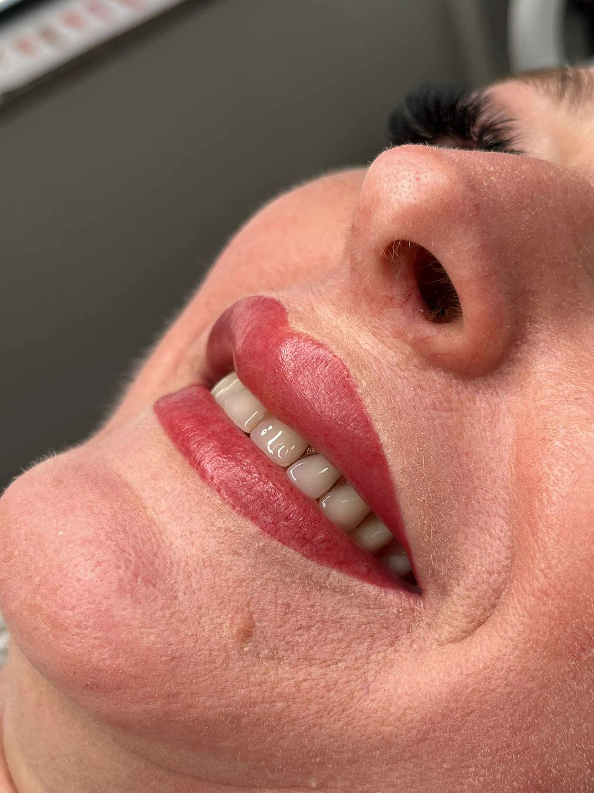
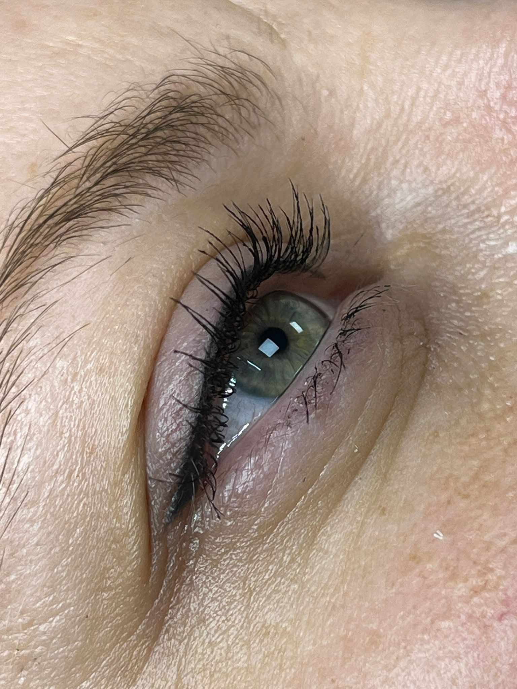

Trajna šminka

Puder obrve
Prirodno definiran i uredan izgled obrva
Puder obrve su tehnika trajnog šminkanja kojom se postiže nježan i sjenčan efekt, kao da su obrve diskretno ispunjene olovkom ili sjenilom. Rezultat je uredan, simetričan i prirodan izgled koji se prilagođava licu i tonu kože.
Ova tehnika idealna je za klijentice koje žele dugotrajan efekt bez svakodnevnog iscrtavanja obrva.
Prednosti puder obrva:
- Prirodan i uredan izgled
- Simetrične i vizualno punije obrve
- Ušteda vremena pri šminkanju
- Dugotrajan rezultat
- Individualno prilagođen oblik i nijansa
Trajanje tretmana: 2 – 3 sata
Trajnost: 1 – 2 godine, ovisno o tipu kože i njezi. Korekcija se preporučuje nakon 4 – 6 tjedana.

Usne
Nježno naglašene i svježije usne
Trajna šminka usana daje prirodan dojam svježine i blagog pigmenta, uz ravnomjerniji izgled konture i ljepši ton usana. Odabir nijanse i intenziteta prilagođava se željenom efektu, od vrlo prirodnog do izraženijeg.
Idealna je za klijentice koje žele uredne, simetrične i njegovanije usne bez svakodnevnog nanošenja ruža.
Prednosti tretmana usana:
- Svježiji i ujednačen izgled usana
- Naglašena kontura i bolja simetrija
- Prirodan efekt bez svakodnevnog ruža
- Individualno prilagođena nijansa
- Dugotrajan rezultat
Trajanje tretmana: 2.5 – 3 sata
Trajnost: Više mjeseci do godine dana, ovisno o tipu kože i njezi. Korekcija se preporučuje nakon 4 – 6 tjedana.

Eyeliner
Uredan i naglašen pogled svaki dan
Trajna šminka eyelinerom precizno definira liniju oka i daje uredan, elegantan i dugotrajan efekt. Može biti vrlo diskretna ili izraženija, ovisno o željenom rezultatu i obliku očiju.
Ovaj tretman je praktičan izbor za klijentice koje žele besprijekoran izgled bez svakodnevnog iscrtavanja tušem ili olovkom.
Prednosti eyelinera:
- Naglašava oblik oka
- Uredan i postojan izgled
- Ušteda vremena pri šminkanju
- Moguć diskretan ili izraženiji efekt
- Dugotrajan rezultat
Trajanje tretmana: 1.5 – 3 sata
Trajnost: Više mjeseci do godine dana, ovisno o tipu kože i načinu njege. Korekcija se preporučuje nakon 4 – 6 tjedana.